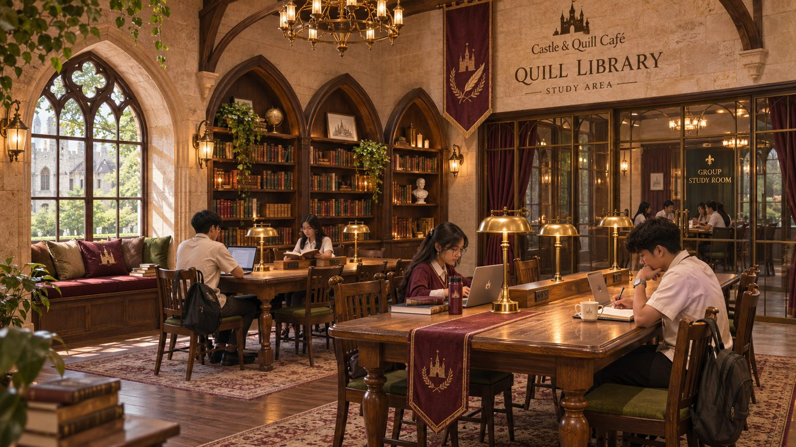
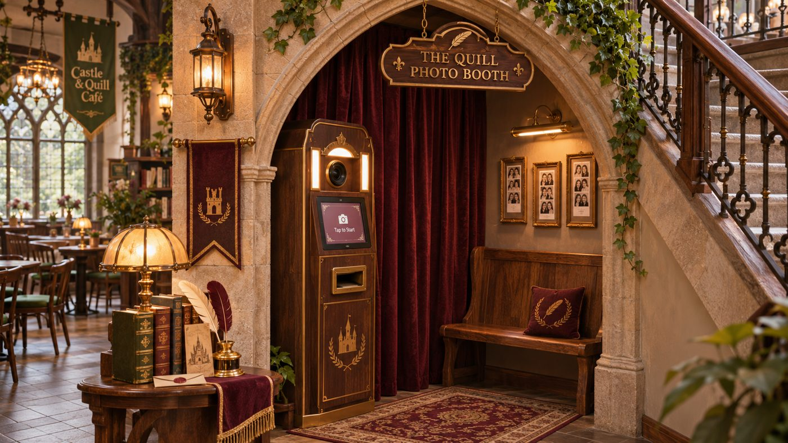

Spaces
Castle & Quill is more than a coffee counter. Each corner is built for a different kind of campus day.

Quill Library
Silent hours run until 5 pm on weekdays. The glass-walled group study room seats eight and can be reserved through our contact form.
- Free Wi-Fi and power outlets at every table
- Window seats with cushions for reading
- Water refills at the coffee bar
The Quill Photo Booth
Tucked under the staircase, our vintage photo booth prints strips you can pin to your dorm wall. Bring your section, your org, or your study buddy.
Strips are free with any food order after 3 pm.

Host your org here
Planning a meeting, a review session, or a birthday? Tell us the date and group size and we will hold a lounge booth for you. Contact us.